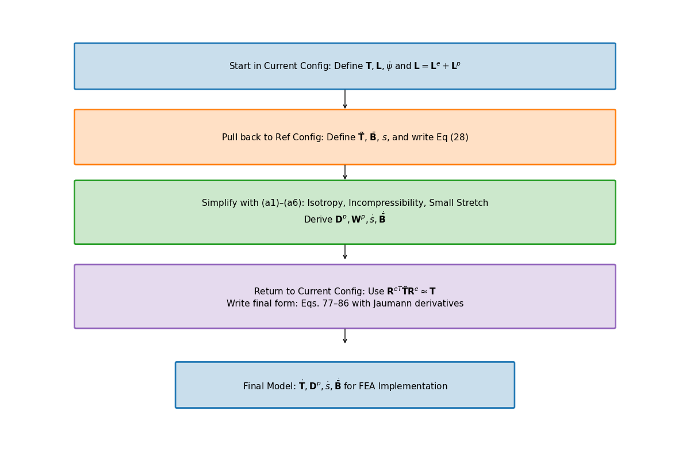

Anand Model: Theoretical Forumation and Application to Solder Joints
Michael Raba, MSc Candidate at University of Kentucky
Created: 2025-04-26 Sat 22:18
Source Paper
Constitutive Equations for Hot-Working of Metals
Author: Lallit Anand (1985)
One of the foundational papers in thermodynamically consistent viscoplasticity modeling—especially significant in the context of metals subjected to large strains and high temperatures.

These are speaker notes visible only in presenter mode.
Case Study: Wang (2001)

Source: Wang, C. H. (2001). “A Unified Creep–Plasticity Model for Solder Alloys.”
DOI: 10.1115/1.1371781
DOI: 10.1115/1.1371781
Why Wang's Paper Matters
- Applies Anand’s unified viscoplastic framework to model solder behavior.
- Focuses on thermal cycling fatigue and rate-dependent deformation.
- Demonstrates how Anand's model can be reduced and fitted from experiments.
- Helps transition the theory into engineering-scale implementation.
Introduction to Anand’s Unified Viscoplasticity Model (1985)
Context & Motivation
- Many metals at high temperatures experience creep and plasticity simultaneously.
- Traditional plasticity models use yield surfaces and separation rules.
- Anand proposes a unified framework to capture both phenomena without a yield condition.
Core Contributions
- Introduces a smooth viscoplastic flow model with a single scalar resistance variable \( s \).
- Fully derived from thermodynamic principles (dissipation inequality).
- Applicable to hot working, solder behavior, and finite deformation problems.
Main Equations of Wang’s Anand-Type Viscoplastic Model
Flow Rule (Plastic Strain Rate)
- \[ \dot{\varepsilon}^p = A \exp\left( -\frac{Q}{RT} \right) \left[ \sinh\left( \frac{j \sigma}{s} \right) \right]^{1/m} \]
- Plastic strain rate increases with stress and temperature.
- No explicit yield surface; flow occurs at all nonzero stresses.
Deformation Resistance Saturation \( s^* \)
- \[ s^* = \hat{s} \left( \frac{\dot{\varepsilon}^p}{A} \exp\left( \frac{Q}{RT} \right) \right)^n \]
- Defines the steady-state value that \( s \) evolves toward.
- Depends on strain rate and temperature.
Evolution of Deformation Resistance \( s \)
- \[ \dot{s} = h_0 \left| 1 - \frac{s}{s^*} \right|^a \, \text{sign}\left(1 - \frac{s}{s^*}\right) \dot{\varepsilon}^p \]
- Describes dynamic hardening and softening of the material.
- \( s \) evolves depending on proximity to \( s^* \) and flow activity.
Note: Constants \( A, Q, m, j, h_0, \hat{s}, n, a \) are material-specific and fitted to experimental creep/strain rate data.
Strain rate sensativity of stress m
- As \( m \to 0 \), rate insensative (yield)
- As \( m \to 1 \), small stress change causes big change in strain rate
Anand Viscoplasticity Constants for 60Sn40Pb
Image Reference
Values are from correspond to 60Sn40Pb solder parameters used in Anand's model:
- \( S_0 \): Initial deformation resistance
- \( Q/R \): Activation energy over gas constant
- \( A \): Pre-exponential factor for flow rate
- \( \xi \): Multiplier of stress inside sinh
- \( m \): Strain rate sensitivity of stress
- \( h_0 \): Hardening/softening constant
- \( \hat{s} \): Coefficient for saturation stress
- \( n \): Strain rate sensitivity of saturation
- \( a \): Strain rate sensitivity of hardening or softening
Numerical Values
- \( S_0 = 5.633 \times 10^7 \) Pa
- \( Q/R = 10830 \) K
- \( A = 1.49 \times 10^7 \) s\(^{-1}\)
- \( \xi = 11 \)
- \( m = 0.303 \)
- \( h_0 = 2.6408 \times 10^9 \) Pa
- \( \hat{s} = 8.042 \times 10^7 \) Pa
- \( n = 0.0231 \)
- \( a = 1.34 \)
These constants match Wang's paper for modeling 60Sn40Pb viscoplasticity.
Internal Variable \( s \) in Anand and Wang Models
Anand (1985)
- Internal variable \( s \) evolves dynamically:
- \( \dot{s} = h(\sigma, s, T) \dot{\varepsilon}^p - \phi(s, T) \)
- Describes both hardening and recovery processes.
- No fixed saturation \( s^* \) assumed.
Wang (2001)
- Defines a practical saturation stress \( s^* \):
- \( s^* = \hat{s} \left( \frac{\dot{\varepsilon}^p}{A} e^{Q/RT} \right)^n \)
- Relates \( s^* \) to strain rate and temperature.
- Simplifies parameter extraction for finite element simulations.
Wang’s Practical Method for \( s \)
- At steady-state plastic flow, Wang assumes:
- \( s \approx \frac{\sigma}{\xi} \)
- \( \xi \) is the stress multiplier in the sinh function (called \( j \)).
- Provides a direct link between observed stress and internal variable \( s \).
Comparing Anand Model Predictions at Two Strain Rates
Observed Behavior
- Top Graph (a): \( \dot{\varepsilon} = 10^{-2} \, \text{s}^{-1} \)
- High strain rate → higher stress
- Recovery negligible → pronounced hardening
- Bottom Graph (b): \( \dot{\varepsilon} = 10^{-4} \, \text{s}^{-1} \)
- Lower strain rate → lower stress at same strain
- Recovery and creep effects more significant
Model Accuracy: Lines = model prediction, X = experimental data
Key Insights from Wang (2001)
- “At lower strain rates, recovery dominates… the stress levels off early.”
- “At high strain rates, hardening dominates, and the stress grows continuously.”
Anand’s model smoothly captures strain-rate and temperature dependence of solder materials.


Pseudocode and Plot: Wang-Anand Model (Low Strain Rate)
Initialization
- Material constants: \( A, Q/R, j, m, h_0, \hat{s}, n, a, E \)
- Strain rate: \( \dot{\varepsilon} \)
- Temperature set: \( \{ T_i \} \)
- Set: \( \varepsilon^p(0) = 0, \quad s(0) = \hat{s} \)
Time Evolution Loop
- \( \varepsilon_{\text{total}}(t) = \dot{\varepsilon} t \)
- \( \sigma_{\text{trial}} = E (\varepsilon_{\text{total}} - \varepsilon^p) \)
- Compute \( x = \frac{j \sigma}{s} \)
- Approximate \( \sinh(x) \) (linearize if \( |x| \ll 1 \))
- \( \dot{\varepsilon}^p = A e^{-Q/RT} (\sinh(x))^{1/m} \)
Plastic Flow & Resistance Evolution
- \( s^* = \hat{s} \left( \frac{\dot{\varepsilon}^p}{A} e^{Q/RT} \right)^n \)
- \( \dot{s} = h_0 \left| 1 - \frac{s}{s^*} \right|^a \text{sign}\left(1 - \frac{s}{s^*}\right) \dot{\varepsilon}^p \)
- Update: \( \varepsilon^p(t+\Delta t) = \varepsilon^p(t) + \dot{\varepsilon}^p \Delta t \)
- Update: \( s(t+\Delta t) = s(t) + \dot{s} \Delta t \)
- Record \( (\varepsilon_{\text{total}}, \sigma_{\text{trial}}) \)
Termination
- Stop when \( \varepsilon_{\text{total}} \geq \varepsilon_{\text{max}} \)
- Plot \( \sigma \) vs \( \varepsilon \) for all \( T_i \)

What If the Material Were Not Viscoplastic?
Expected Graphical Differences
- No strain rate sensitivity: All curves would collapse onto a single stress–strain curve, regardless of temperature.
- Sharp yield point: Stress would remain low until a threshold is reached, then suddenly rise — no smooth buildup.
- Post-yield response: Would likely show perfectly plastic or linear hardening behavior, independent of rate.
Relation to Plasticity Course
- This behavior mirrors rate-independent J2 plasticity with isotropic hardening.
- In graduate courses, it corresponds to models with yield surfaces and flow rules only activated above yield stress.
- Contrasts Anand’s approach, where flow begins smoothly at any stress, blending creep and plasticity into one.
Mapping Anand’s Section 3 to Wang’s Model
| Anand (1985) | Role | Wang (2001) | Comment |
|---|---|---|---|
| (77) \( \dot{T} = \mathbb{L} [D - D^p] - \eta \mathbb{I} \) | Elastic stress–strain–temperature relation | Not included explicitly | Elasticity assumed handled separately in FEM. |
| (78)-(80) \( D^p = \dot{\gamma}^p \frac{T'}{2\tau} \) | Plastic flow rule based on deviatoric stress | \( \dot{\varepsilon}^p = A \exp\left( -\frac{Q}{RT} \right) \left[ \sinh\left( \frac{j\sigma}{s} \right) \right]^{1/m} \) | Flow scalarized: stress–strain relation based on effective stress \( \sigma \). |
| (81)-(86) \( \dot{s} = h(\sigma, s, \theta) \dot{\varepsilon}^p - r(s, \theta) \) | Evolution of deformation resistance \( s \) | \( \dot{s} = h_0 \left( 1 - \frac{s}{s^*} \right)^a \dot{\varepsilon}^p \) | Hardening toward \( s^* \); no explicit static recovery \( r \) included. |
Breakthrough Features of Anand’s Viscoplastic Model
1. No Yield Surface Needed
- Plastic flow occurs at any stress level.
- No von Mises yield or loading/unloading logic.
- Enables unified creep–plasticity modeling.
2. Scalar Internal Variable \( s \)
- Represents resistance to inelastic flow.
- Captures hardening, softening, and recovery.
- Governs evolution in Eq. (86).
3. Thermodynamic Consistency
- Grounded in reduced dissipation inequality (Eq. 28).
- Ensures entropy production and realism.
- Built from stress–strain conjugacy, energy balance.
4. Jaumann Rates Ensure Objectivity
- Uses Jaumann derivatives for stress and backstress.
- Maintains frame invariance (Eqs. 63, 65–66).
- Essential for rotating frames in FEA.
5. Practical for Experiments and FEA
- 1D model extractable from uniaxial data.
- Wang (2001) shows direct parameter fitting.
- Equations (77–86) ready for FE implementation.
Key Idea
Anand's model unifies physical laws, experiment, and computation in one robust viscoplastic framework.
Formulation pipeline for Anand’s viscoplastic model
Visual Roadmap of Anand’s Model
This flow ensures Anand’s model is thermodynamically consistent and computationally implementable.

Broad Strokes of Anand’s Unified Viscoplastic Model (1985)
1. Modeling Goal
- Unify inelastic deformation: creep + plasticity
- Avoid yield surfaces and loading/unloading rules
- Support large deformation and high temperatures
2. State Variables
\[ \{ \mathbf{T}, \theta, \mathbf{g}, \bar{\mathbf{B}}, s \} \]- Stress, temperature, and temperature gradient
- Backstress-like tensor \( \bar{\mathbf{B}} \)
- Scalar internal resistance \( s \)
3. Reference Configuration Formulation
- Switch to relaxed frame (material configuration)
- Formulate stress power and entropy production
- Arrive at dissipation inequality (Eq. 28)
️ 4. Thermodynamic Constraints
- Apply (i)-(iv): entropy, energy, heat flow laws
- Use assumptions (a1)–(a5): small elastic stretch, isotropy, incompressibility
- Restrict response functions \( \bar{\mathbf{B}}, s, \dot{s} \)
5. Simplified Constitutive Equations
- Polynomial-based evolution for \( \bar{\mathbf{B}} \) and \( s \)
- Simplified plastic flow and hardening response
6. Back to Current Configuration
- Use small elastic stretch:
- Reformulate in spatial frame for FEA compatibility
7. Final Model (Eqs. 77–86)
- Includes stress rate, flow rule, and hardening law
- Unified viscoplastic response — smooth & thermally sensitive
- Ready for implementation in FEA solvers
Thermodynamic Foundations of Anand’s Model
Key Constraints from Dissipation
- \(\dot{\psi} = \frac{\partial \psi}{\partial \mathbf{E}^e} : \dot{\mathbf{E}}^e + \frac{\partial \psi}{\partial s} \dot{s}\)
- \(\eta_r = -\frac{\partial \psi}{\partial \theta}\)
- \(\Rightarrow \dot{\psi} - \mathbf{T}:\dot{\mathbf{E}}^e - \eta_r\dot{\theta} \leq 0\)
- Result: All response functions must respect the second law of thermodynamics.
Simplifying Assumptions (a1)–(a6)
- (a1) Objective stress measures (e.g., Jaumann rate)
- (a2) Isotropy in material response
- (a3) Incompressibility of plastic flow
- (a4) Free energy function is additively decomposed
- (a5) Temperature dependence enters through specific variables
- (a6) Separation of mechanical and thermal effects is approximated
Flow Parameters
- \( A \) – Pre-exponential factor for flow rate.
- \( Q \) – Activation energy (units of energy/mol).
- \( \xi \) – Stress multiplier inside the sinh() law.
- \( m \) – Strain rate sensitivity exponent.
- \( \dot{\varepsilon}^p \) – Effective plastic strain rate.
- \( \bar{\sigma} \) – Effective (von Mises) stress.
Stress & Elasticity
- \( \mathbb{L} \) – Elastic stiffness tensor.
- \( \Pi \) – Stress-temperature coupling tensor.
- \( \bar{\mathbf{T}} \) – Kirchhoff stress (reference frame).
- \( \mathbf{D}, \mathbf{D}^p \) – Total and plastic strain rate tensors.
Internal Variable Evolution
- \( s \) – Isotropic strength (scalar resistance variable).
- \( \hat{s} \) – Saturation value for \( s \).
- \( n \) – Sensitivity of \( \hat{s} \) to strain rate.
- \( h_0 \) – Hardening modulus coefficient.
- \( a \) – Exponent controlling recovery rate of \( s \).
Backstress Evolution (Tensor \( \bar{\mathbf{B}} \))
- \( \xi_1, \xi_2 \) – Coefficients for driving terms in \( \dot{\bar{\mathbf{B}}} \).
- \( \mathbf{W}^p \) – Plastic spin tensor.
- \( b(\bar{\tau}_b) \) – Oscillation control function (for shear stability).
Note: All parameters are temperature-dependent, and some (like \( A, Q, m \)) are fit to experimental data using the 1D simplification.